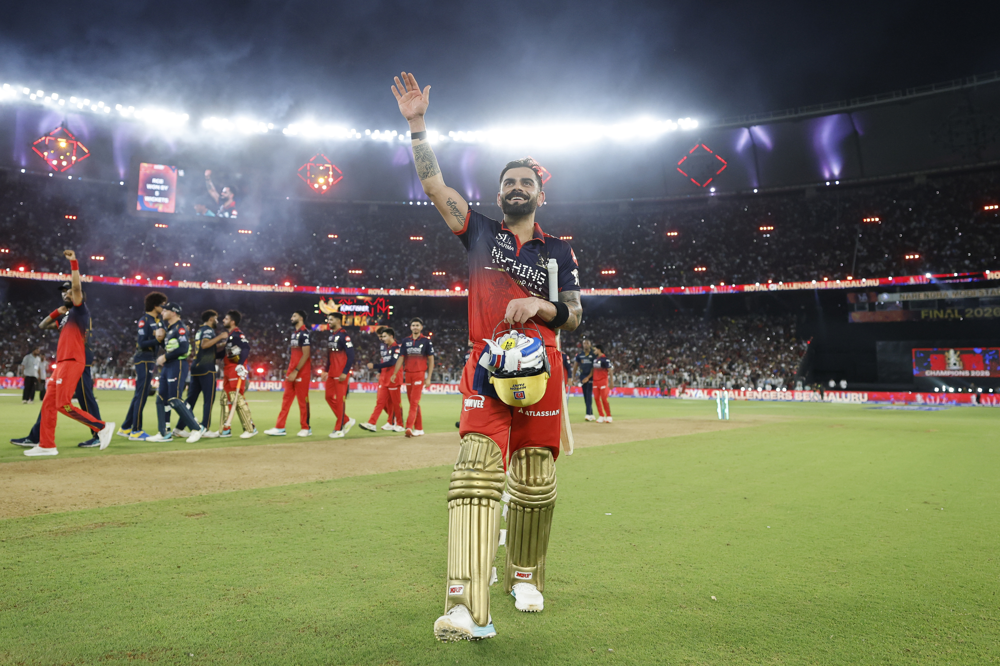

Royal Challengers Bengaluru (RCB) won back-to-back IPL titles, defeating the Gujarat Titans by 5 wickets in the IPL 2026 Final on May 31, 2026, where Virat Kohli scored 75 not out off 51 balls (including hitting the winning six) to seal the championship.
Key Highlights of the Winning Moment • The Chase: RCB successfully chased down a target of 156 runs against the Gujarat Titans in Ahmedabad. • Kohli's Milestone: Virat Kohli hit his fastest IPL half-century of the season (off 25 balls) and remained not out, fulfilling his dream of hitting the winning runs in an IPL final. • Back-to-Back Dynasty: This victory followed RCB's maiden IPL title win in 2025 against Punjab Kings, making them the third franchise in IPL history to win consecutive trophies. • Emotional Reactions: An emotional Kohli dropped to his knees in tears and celebrated alongside teammates and wife Anushka Sharma after ending RCB's long trophy drought over his 18-year career with the franchise.Following their maiden IPL title win in 2025 (where they defeated Punjab Kings), RCB became the third franchise in IPL history to successfully retain or win back-to-back titles. Kohli reflected that winning after the long 18-year wait with the franchise made the second consecutive championship feel monumental.In a candid reflection during RCB Podcast, Virat Kohli opened up about the raw emotion of finally breaking the IPL championship jinx, the legacy of RCB, and why a victory earlier in his career wouldn't have felt even a fraction as special. For 18 long years, RCB carried the pressure of being IPL’s ‘almost champions’. No individual lived through that mounting pressure more intensely than Virat Kohli. Reflecting on the breathtaking final moments of last year's final, he revealed the weight of expectations that was unburdened when the winning moment arrived.